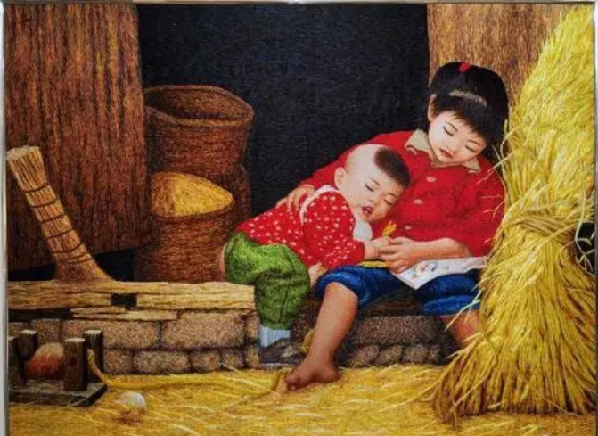
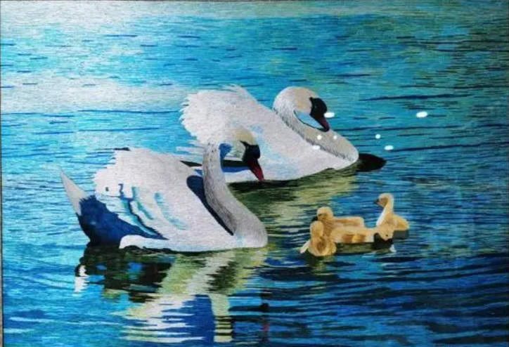
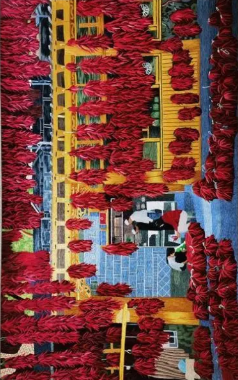

撒拉族刺绣



撒拉族刺绣艺术是民族文化百花园中的一枝奇葩，一般是以花鸟鱼蝶等图案为主，构图朴实、细腻生动，色彩鲜艳，明亮做工精细而著称;撒拉族刺绣具有针法细腻、工艺精湛、立体感强等特点，所绣花鸟鱼蝶形象栩栩如生，其刺绣工艺能与苏绣、湘绣相媲美，撒拉族刺绣有民间刺绣与现代刺绣两种。
撒拉族刺绣艺术是民族文化百花园中的一枝奇葩，一般是以花鸟鱼蝶等图案为主，构图朴实、细腻生动，色彩鲜艳，明亮做工精细而著称;撒拉族刺绣具有针法细腻、工艺精湛、立体感强等特点，所绣花鸟鱼蝶形象栩栩如生，其刺绣工艺能与苏绣、湘绣相媲美，撒拉族刺绣有民间刺绣与现代刺绣两种。